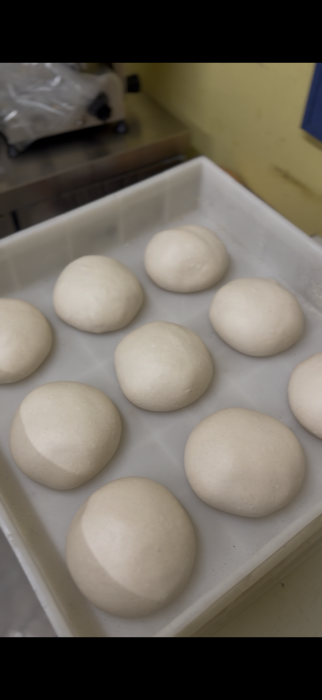
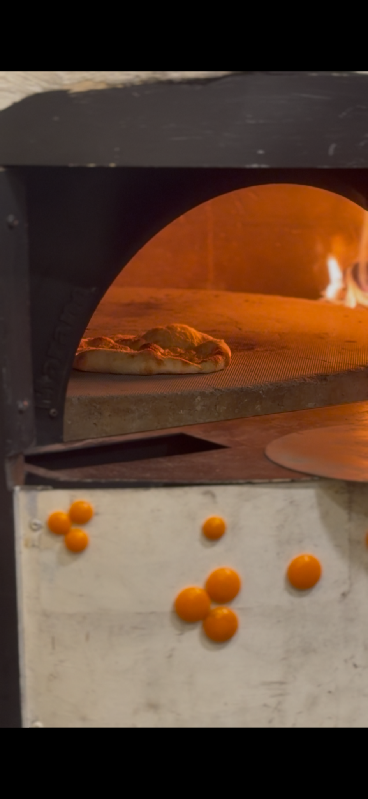

1 · La masa
Reposo, tiempo y oficio.
La pizza empieza mucho antes de tocar el horno.
Panzzoni entra por el fuego, sigue por la masa y se queda en la memoria por la pizza. Una web hecha para abrir apetito, contar lo justo y llevar al cliente a elegir local sin perderse.
La historia no habla del diseño. Habla del proceso que hace que una pizza merezca la pena: la masa que reposa, el horno encendido y la cocción que define el borde, el aroma y la textura.
Más ligereza, más digestibilidad y mejor estructura.
Calor, carácter y una cocción que se nota en cada borde.
San Marzano, fior di latte, burrata, guanciale, speck, mortadella, pistacho y trufa.


La pizza empieza mucho antes de tocar el horno.

El horno es parte del sabor y también parte del espectáculo.

El borde sube, el queso se funde y ya no hace falta explicar más.
Clásicas, favoritas de la casa y algunas que piden una segunda visita. El objetivo aquí es simple: que el usuario vea pizza y quiera pizza.

Salsa de tomate San Marzano, mozzarella fior di latte, parmigiano reggiano 24 mesi y albahaca.

Tomate San Marzano, mozzarella fundente, salame picante y el punto exacto de horno.

Guanciale crujiente, provola affumicata, crema carbonara y parmigiano reggiano rallado al momento.

Mozzarella fior di latte, burrata cremosa, mortadella de Bologna y pistacho.

Crema de trufa, provola affumicata, speck del Tirol y parmigiano.

Grelo italiano salteado, salchicha fresca y albahaca sobre masa viva.

Nduja calabresa, ricotta y miel sobre fior di latte.

Masa napolitana rellena, albóndigas de la Nonna y parmigiana di melanzane.
Primero eliges ciudad. Después, ya dentro de cada local, los botones importantes son solo dos: llamar o ir al Instagram.
Pizza napolitana, horno de leña y una carta pensada para pedir, compartir y volver.
La propuesta Panzzoni en Santiago: fuego, producto y una experiencia clara desde móvil.